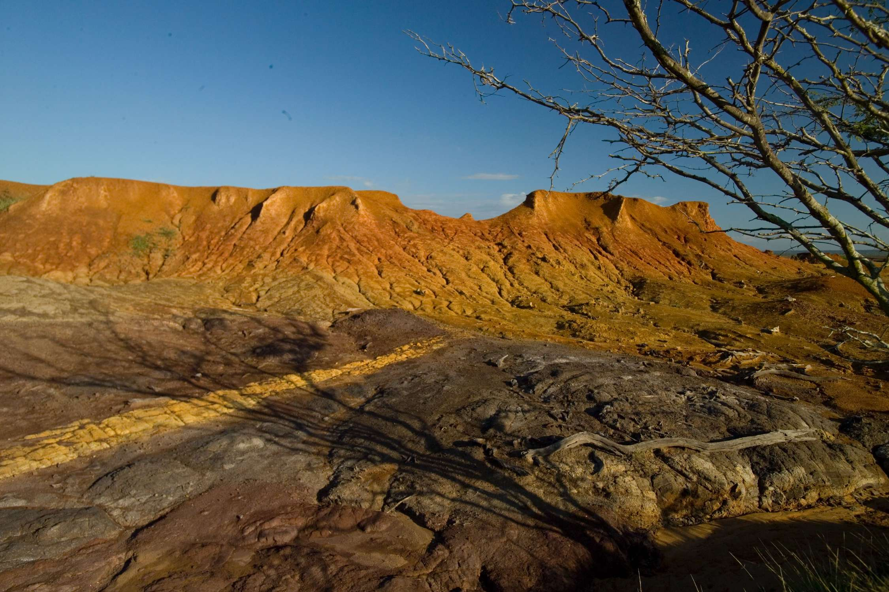
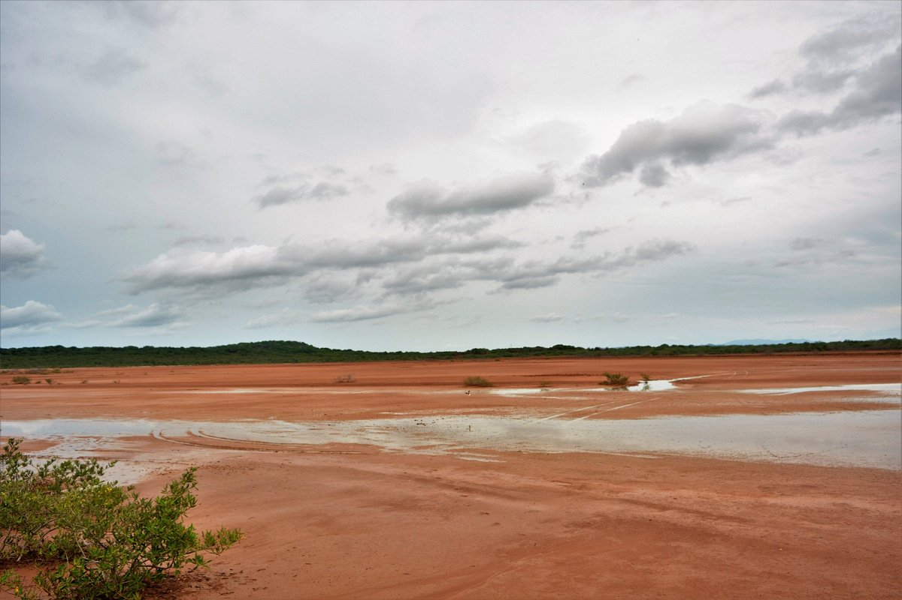
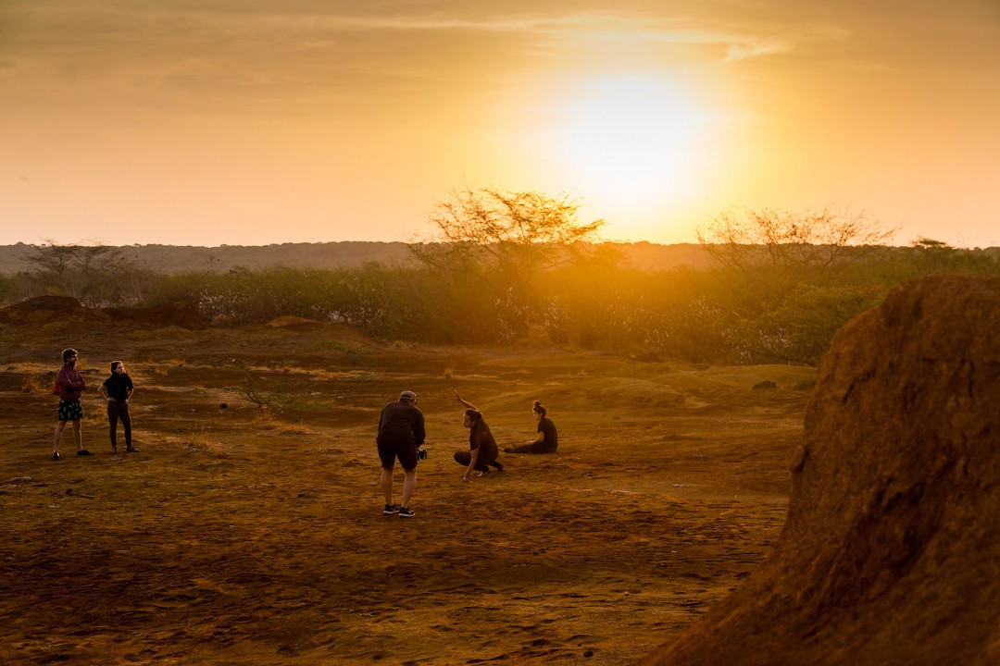
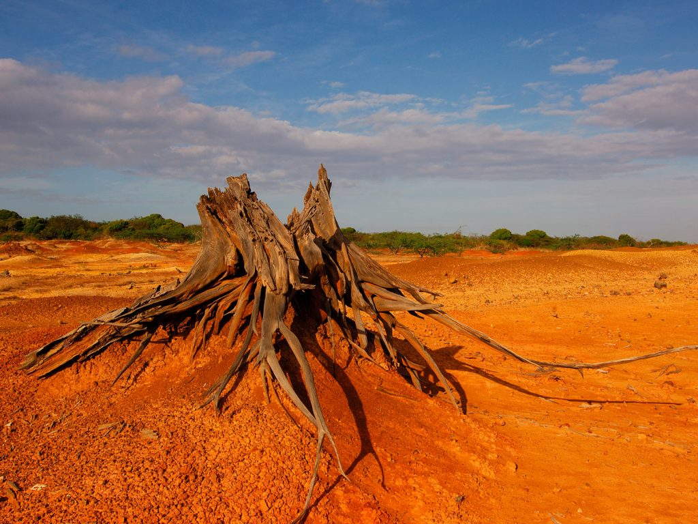

Antecedentes Históricos

El Parque Nacional Sarigua, conocido por su ambiente árido, ha sido objeto de estudios desde 1979. El principal problema que enfrenta es la erosión eólica y la deforestación causada por la actividad humana. Estudios han mostrado que la desertificación comenzó hace miles de años debido al retiro del mar y la tala indiscriminada para pastoreo.
Además de su historia natural, Sarigua tiene importancia arqueológica por los asentamientos humanos que existieron hace más de 9,000 años. A lo largo del tiempo, la agricultura y la deforestación aceleraron la degradación del suelo.
Contexto

El Parque Nacional Sarigua es un lugar de contrastes. Aunque es un área semidesértica, hace miles de años fue una región llena de vida. Declarado parque nacional en 1984, abarca ecosistemas marinos, albinas, y áreas erosionadas. Gracias a la regeneración natural y a esfuerzos privados, algunas áreas han comenzado a recuperarse.
Características de la Zona

El Parque Nacional Sarigua abarca 8,000 hectáreas en la provincia de Herrera. Aunque el parque no es un desierto, ha sido afectado por la salinización. Su flora incluye cactáceas y arbustos resistentes, mientras que la fauna se compone de mamíferos, aves migratorias y reptiles. Las temperaturas varían entre 16°C y 41°C. Geográficamente, Sarigua está a 234 km de la Ciudad de Panamá.
Conclusión

Para concluir este proyecto y con la idea de darle continuidad o al menos avanzar en su desarrollo, se presentan las siguientes conclusiones y recomendaciones obtenidas a lo largo del proceso, destacando los beneficios de materializarlo o llevarlo a cabo.
El Parque Nacional Sarigua ha sido percibido como un desierto, y esta clasificación ha frenado el desarrollo de proyectos de mejora y la promoción del turismo, que podría potenciar la zona.
La regeneración natural observada en áreas cercanas a las tinas de camarones sugiere que el suelo del parque es recuperable. La vegetación ha crecido espontáneamente sin intervención humana, gracias a la germinación natural impulsada por los animales de la zona.
El Ministerio de Ambiente debería implementar un Plan Maestro de reforestación en el Parque Nacional Sarigua, contando con la participación de la comunidad, colegios, universidades, organizaciones de protección ambiental, y ONG tanto nacionales como internacionales.
En el proceso de reforestación, es fundamental observar y aprovechar las especies nativas que ya han proliferado en el área.
Es importante concienciarnos de que el turismo puede generar actividades complementarias que impulsen la economía local y provean fondos para financiar los programas de reforestación.